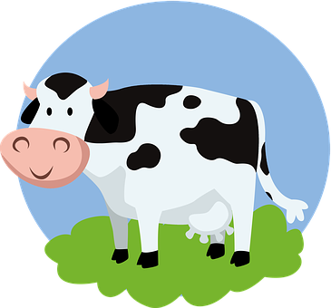

Leather should be obvious as to why it is harming the animal, you have to kill the animal in order to get its skin.
Introduction
Veganism is a practice of abstaining from the use or consumption of animal products. Such practices are occasionally seen in philosophical religions such as Hinduism and Buddhism. Many non religious and people who practice different religions are seen practicing the vegan lifestyle as well. Veganism is becoming more abundant and more and more people are being more open to giving it a try. My hopes are that with this informative website I could give the information and answer the questions of those who are indeed planning on embarking on this journey.
Personal Experience
When Covid-19 just hit during the March of 2021 I was looking for ways to better myself.
I tried out meditating, reading, etc. Then I stumbled upon veganism and I was curious because I was also looking for ways to get in shape.
I saw veganism as a diet that could help me get fit. In order to stick to it I began doing research and found out all of the cruelty in the animal industry.
The horrors those poor animals had to go through. The effects of it on the environment. Slowly but surely veganism became much more than a diet to me.
I chose to stay vegan no matter what. My reasons now were much stronger than before and the passion I felt towards the subject of animal welfare and environment were immense.
When I found out all the lies that were being fed to me all through my life, I knew I had to let the rest of the world know too.
No one can do everything, but everyone can do something.-Max Lucado